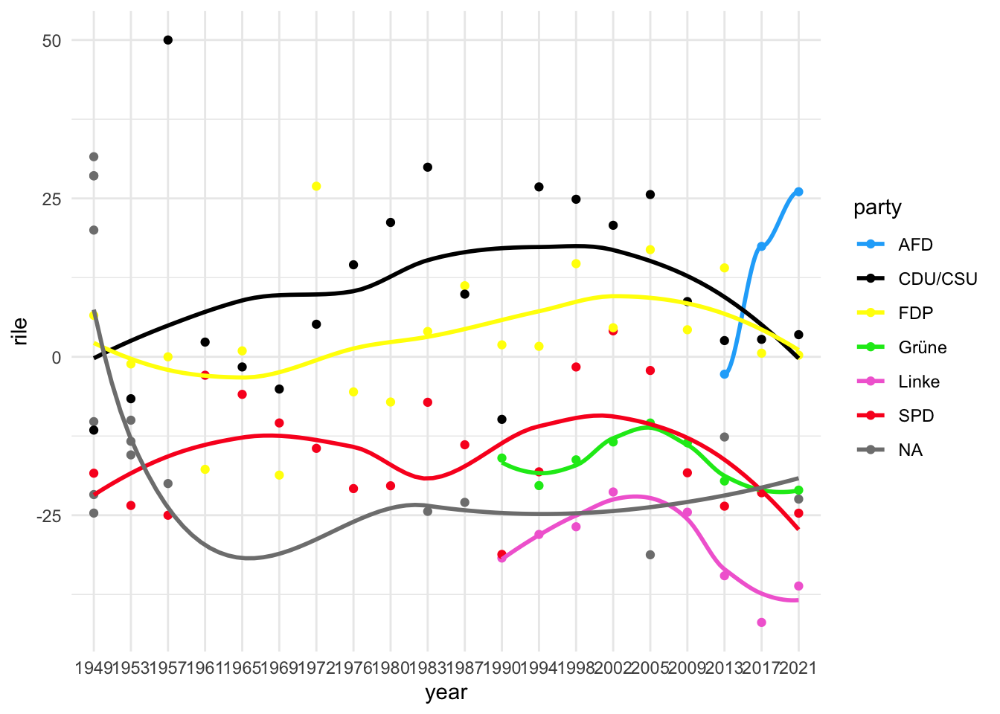
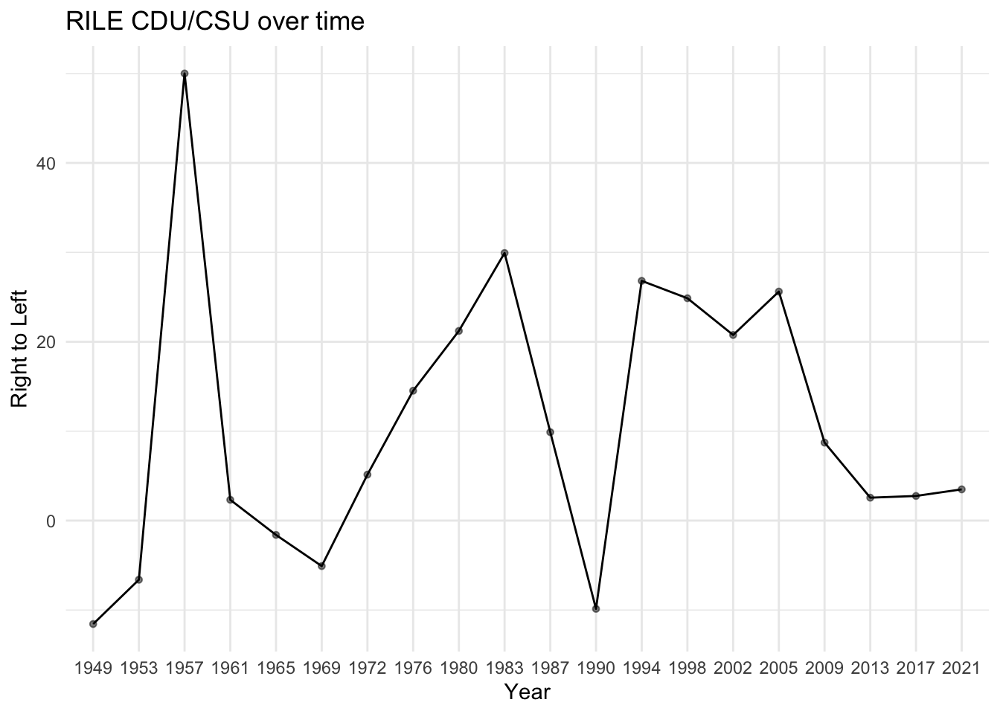

library(tidyverse)4 Time Series
4.1 Introduction
This week’s R session will introduce you to the logic of time series cross section in RStudio. Be aware that just because it sounds very impressive does not mean that we need to be in awe. It is rather straight forward and once you can wrap your head around it, you will see that – as always – the actual coding part is not that complicated (except but… we still have to manage our data).
This week’s session will also introduce you to a dataset which you have not seen: the Comparative Manifesto Project (CMP) or also referred to as Manifesto Research on Political Representation. If you are only interested in party positions based on their manifestos, and thus only in intervals of 4-5 years, it is a great source for everything that has to do with party positions and political competition over time, within party families or within several countries – or everything all at once.
The idea of the CMP is that individual human-coders split the party manifestos for each party at each election into quasi-sentences and attribute it to a certain topic. The topics are predefined and go back to the saliency theory of Budge and Farlie (1983). In their pre-definition, they are also attributed to either left-wing politics or right-wing politics. The idea of the saliency theory is that parties will only emphasize those issues which are favorable to them. Therefore, we can place parties in a (one- or twodimensional) space. Examining these estimates of party positions over time can give us insights on party competition.
I could spend hours talking about how to model party competition. But according to Jan, I spend way too much of my time thinking about models and operationalizations,1 which is why I will not bother you with my thoughts on the CMP and its advantages or inconveniences. Let me say this at least: the CMP is a powerful and widely used database; it relies, however, on very very strong assumptions, which can be problematic (imho). If you are interested in party competition and party positions, feel free to contact me or come see me after class. Also, here are some references, which you might want to consult to check out scientific publications using the CMP or articles evaluating the validity of the CMP’s measures; for different uses of the CMP: Green and Hobolt (2008) or Adams and Somer-Topcu (2009); for critical evaluations of the CMP: Dinas and Gemenis (2010), Gemenis (2013), Ruedin and Morales (2019).
I would also like to emphasize that this week’s code is inspired by a publication by Abou-Chadi (2016). I have not had the time to come up with a witty coding idea myself and the paper by Abou-Chadi came with a replication dataset. The TSCS model with which we are going to play around with does not follow the exact same method but is loosely based on his paper and generates somewhat close results. The purpose of this script is to expose you to the logic of ARIMA models, TSCS, especially to fixed and random effects models.4.1.1 Some Thoughts on Time Series in general…
Now, you might be wondering if you are ever going to use these seemingly incomprehensible formulas, equations and terms like Error Correction Model, lagged dependent variable or structural equation approach. The boring answer is that this is up to you. It was up to me too at one point. Remember that I took this class too, had my mind made up about a multinomal model I wanted to do and was pretty sure that I would never dig deeper into time series. Little did I know that your research interests sometimes force you to learn methods you thought you would never need. This happened to me a couple months later, when at the beginning of my third semester I wanted to work on parties and the evolution of party positions in response to other party’s shifts. Jan suggested that I would have to look at time series at some point. I did and I have come to hate and to like them. I did not say love them, I like them. They are still quite awful in terms of math and push me to the boundaries of what I can grasp… Time series are one of the best statistical methods to understand social and many other change(s) over time. They allow you to understand causal relationships between many kinds of variables over time and most importantly the drivers of that relationship or change across time. There is a huge abundance of questions that relate to changes over time that we are interested in explaining. It does not have to be limited to my boring party competition stuff: what about crime and approval ratings, and then trying to see whether there is a statistical relationship between increases in crime and decreases in approval ratings.4.1.2 … and more specifically on Time Series in R
This is now the 5th session and you might still believe me that R can be fun, and that it can be easy in some cases. The logic and math behind time series analysis can be tricky, I am aware of that. But you will see that many things are taken care of by packages like theplm or tseries packages for panel data analysis (Whatever that is for now…) or general time series analyses. Some things we still need to do ourselves, especially the specification of our ARIMA models which you have seen in Jan’s class. I will try to further give you some help on that as well as some other tricks!
4.2 What is Time Series Cross Section (TSCS)?
I suppose you have seen this with Jan, so I am only going to briefly recapitulate the idea of TSCS. Generally speaking, we have two things going on with which we can have a lot of data fun. First, we have observations for more than one unit (e.g., countries, parties) and for more than one point in time. If you wish to work with TSCS models, you first need to find a dataset that has enough observations over time and in more than one unit. As a rough guesstimation, I would say 20 observations at least as the bare minimum, ideally many more. Unfortunately, this is where data availability can be an issue 2 In the next paragraphs, I will try to show you what we need to understand to conduct TSCS analyses in R. For all the tricky math stuff, please refer to Jan’s lecture which gives a much better and thorough overview on everything that is going on underneath the hood of TSCS and its assumptions. If you have any questions on this, he is the better reference than me but I can try my best in answering your questions.4.2.1 Data Structure
As we will work with the CMP, I know that we have enough observations to have time series. However, we must make sure that the structure is according to time series across units. The data structure (and you might have seen this table in Jan’s document) should look somewhat like this: Here we have a structure that allows us to do TSCS models. The data is structured in a way that it follows the order of unit per year.4.3 The Comparative Manifesto Project
Let’s import the CMP dataset. As you can see country 41 corresponds to Germany. I have imported some variables of the CMP as well but for now, we will simply look at the variable rile. It’s the CMP’s special measure of an aggregated left-right position of parties based on the ideas of the saliency theory by Budge and Farlie (1983).
# for the download of the dataset, please click on the link for
# of this script the CMP in this script
cmp <- read_csv("data/cmp.csv") |>
# I only import the variables I am interested in; check the codebook first
# ALWAYS
select(country, partyname, date, rile, per602_2, per601_2, per607, per608) |>
# this is an old code I have used; 41 = Germany (check out the codebook)
filter(country == 41) |>
# here I align the names as there are some inconsistencies over the years
mutate(party = case_when(
partyname == "Alliance‘90/Greens" ~ "Grüne",
partyname == "Greens/Alliance‘90" ~ "Grüne",
partyname == "Alternative for Germany" ~ "AFD",
partyname == "Christian Democratic Union/Christian Social Union" ~ "CDU/CSU",
partyname == "Free Democratic Party" ~ "FDP",
partyname == "Party of Democratic Socialism" ~ "Linke",
partyname == "Social Democratic Party of Germany" ~ "SPD",
partyname == "The Left" ~ "Linke",
TRUE ~ NA_character_
),
year = str_sub(date, 1, 4))Rows: 4778 Columns: 174
── Column specification ────────────────────────────────────────────────────────
Delimiter: ","
chr (7): countryname, edate, partyname, partyabbrev, corpusversion, datase...
dbl (167): country, oecdmember, eumember, date, party, parfam, coderid, manu...
ℹ Use `spec()` to retrieve the full column specification for this data.
ℹ Specify the column types or set `show_col_types = FALSE` to quiet this message.4.3.1 Quick excursion: the stringr package
In the last line of the code, I create a new variable called year. Since the CMP is based on party manifestos, the initial date variable is estimated for the respective election day. But we are only interested in the year that the election took place. The function I use, str_sub() is from the stringr package which is one of the most useful ones you can find in R. We will talk about it again in the next session when we will have to transform textual data in R. What this function does is that it will take the first the fourth character of the variable and substract/delete all the others. I do this because the intital date variable follows the pattern of “yyyy/mm/dd”. And as I only want to have the “yyyy” part, I take the first four characters (or in our case numbers). If I wanted create a variable yearmonth for example, I would have specified str_sub(date, 1, 6). By the way, if you ever want to indicate in R that you want something until the value of something, you can do so by specifying -1. In our case, let’s say I only wanted to get the month and the day of the date variable (which would be the 5th to 8th character), I could specify it as follows: str_sub(date, 5, -1).
Enough theoretical talk about functions. Let’s look at the left-right estimations of the CMP per party:
ggplot(cmp, aes(x = year, y = rile, color = party)) +
geom_point() +
stat_smooth(aes(group = party), method = "loess", se = FALSE) +
scale_color_manual(values = c("#20aefa", "#000000", "#FFFF00", "#00e81b",
"#f26dd5", "#fa2024")) +
# without this line, the lables of the x-axis would overlap
theme(axis.text.x = element_text(angle = 90, vjust = 0.5)) +
theme_minimal()
This gives us the smoothed means for every party over the span of 1949 until 2021. We should start with a . This means that we will look at the evolution of one series over time; in our case, this specifically means that we will look at the evolution of the left-right position of over time. Let’s start with the Christian-Democrats, the CDU, and the Social-Democrats, the SPD. I will quickly create an object, only containing values of the CDU and another one for only the SPD.
cdu <- cmp |>
select(party, rile, year) |>
filter(party == "CDU/CSU")
spd <- cmp |>
select(party, rile, year) |>
filter(party == "SPD")We are, however, not interested in the mean position over time but the inidividual values over time. The first thing you should always do, when working with time series data, is to plot your variable of interest. It’s like looking at a data set when you first import it. Sometimes you can already detect things like seasonality that we will test for either way:
ggplot(cdu, aes(year, rile)) +
geom_line(aes(group = party)) +
geom_point(alpha = 0.5, shape=20, size=2) +
labs(title = "RILE CDU/CSU over time", x = "Year", y = "Right to Left") +
theme_minimal()
5 Specifying the Spectre – ARIMA
ARIMA stands for Autoregressive Integrated Moving Average. All these three factors are causing headache when trying to work with time series. Why is that so you might ask? Well, we are trying to filter out anything that might influence the evolution of our series that has nothing to do with the series time variance component. In a way, we are trying to “filter” out the signal from all the noise that our series come with. At the end we want to strip our time series free of all drifts and influences and understand what is actually influencing the changes in it.While I am writing this, I realize that Jan gives so much better explanations on this and that it is more important that I teach you how to do all of this in R. You can estimate the order of the time series processes (autoregressive, integration, moving average) yourself by looking at the auto-correlation function (ACF) or the partial auto-correlation function (PACF). For this, use acf() or pacf(). You can then estimate the ARIMA model yourself…
… or you simply use the auto.arima() function :o It is not 100% fool-proof and you should always check yourself but I find it quite reliable!
forecast::auto.arima(spd$rile)Registered S3 method overwritten by 'quantmod':
method from
as.zoo.data.frame zoo Series: spd$rile
ARIMA(0,0,1) with non-zero mean
Coefficients:
ma1 mean
0.8129 -15.5134
s.e. 0.2222 2.8827
sigma^2 = 58.27: log likelihood = -68.52
AIC=143.03 AICc=144.53 BIC=146.02If we now had to specify an ARIMA model, this is how you would do it:
arima_model <- arima(spd$rile, order=c(0,0,1))6 Time Series Cross Sectional Models
All right, let’s get serious about time series cross sectional models. For this week’s session, we will talk about the paper by Abou-Chadi (2016). It comes with a replication dataset and replication code. Unfortunately, it is in STATA and not in R which is why I will try to replicate it as well as possible but in R. The article examines the question as to how the emergence of radical-right and Green parties might restructure multiparty competition and the behavior of established parties. Empirically, the paper assesses whether and how established parties adapt to the niche parties positions and issues. For the example in this script, we will focus on only half of the paper, which studies the reactions to increase in radical right party support. We will try to reproduce the TSCS model trying to prove hypothesis 1a: “Increasing radical right party support causes mainstream parties to shift toward anti-immigrant positions.” (p. 423). Thus, our DV will be the mainstream parties’ position on multiculturalism. 3 The coding of how to get to the position is explained in the paper or feel free to ask me after class. The variable of interest concerning H1a is the overall radical-right support at the prior election. Thus, we have a variable of radical-right support at \(t-1\). The author also accounts for a variety of variables, apart from the variables of interest: party size, government participation and the natural logarithm of numbers of migrants per that year. These are all variables of which we, or rather the author and we know that they can influence positional shifts of mainstream parties.This is the pooled regression equation which we will use for the time-series cross section model (first with fixed and then with random effects):
\(Multiculturalism_{i,t} = \beta_{0}Multiculturalism_{i, t-1} + \beta_{1}Radicalrightsupport_{i, t-1} + \beta_{2}partysize_{i,t} + \beta_{3}government_{i,t} + \beta_{4}immigration_{i,t} + v_{i} + \epsilon_{i,t}\)
There are two ways in TSCS models, to deal with the differences between units. In our case, the units (as chosen by Abou-Chadi in the paper) are the parties. In many other cases, units might be countries. Fixed effects models differ from random effects models in the way that they take into account the differences between the unit effects. In a fixed effects model, we assume that the differences between parties (our units) do not vary over time. Regardless of what is happening over time, the differences between the CDU and the SPD as a party do not change. The random effects model, on the other hand, assumes that the differences between units are random and can change over time. This means that the differences between units can change based on what is happening over time. Note that both models assume that parties do have an influence on their position on multiculturalism. Does that sound really abstract? It is. Maybe let’s look at the way how we construct the models and then, once we interpret them, try to understand the results and FE as well as RE better.6.0.1 Data of Abou-Chadi (2016)
Here, I first import the data set which came in the paper. I downloaded it from the which is the most comprehensive platform for datasets and reproduction data and code. If you are ever unsure of where to look for data, this is where I would start! I will speak about it again in session 6, I believe.I have done the job of selecting the variables as well. You can see that I also create a lagged variable in the last line of code. This will create a variable with the exact same values as cultposition but always one election behind. The value of cultposition at \(t-1\) will be now at \(t\) in the newly created lagged variable. I am afraid that this is not clear so I will try to reframe it less technically: A lagged variable is a variable that takes on the value of a previous time period for a given variable. In our case, cultposition measures the position of a party at a specific election. So, if you want to create a lagged variable of cultposition, you would take the value of cultposition for the previous election and assign it to the current election.
For example, let’s say we have the following data for cultposition in three different elections:
- Election 1:
cultposition= 10 - Election 2:
cultposition= 12 - Election 3:
cultposition= 15
If we create a lagged variable (lag_cultposition) for cultposition, it would look like this:
- Election 1:
lag_cultposition = NA(NA since there is no previous value for cultposition) - Election 2:
lag_cultposition = 10(since the previous value of cultposition was 10 in Election 1) - Election 3:
lag_cultposition = 12(since the previous value of cultposition was 12 in Election 2)
By creating this lagged variable, you can analyze how a variable changes over time and whether previous values of the variable have an effect on current values.
library(tidyverse)
tac <- haven::read_dta("data/cmp_abouchadi.dta") |>
# as you can see the author provided a pre-cleaned, all set reproduction data-
# set which is seriously great!
select(countryname, cultposition, sumright, rileright, limmig, govparty,
pervote, partyname, date) |>
group_by("partyname") |>
# lag() from the dplyr package will create a lagged variable for cultposition
mutate(lag_cultposition = dplyr::lag(cultposition))6.0.2 Fixed Effects
We must first load the plm model into our session. Everything else is, to be honest, relatively straight forward. We specify a model with the plm() function of said package and follow the same logic as for a simple lm() model. Two things you must take care of though: first specifying the unit and the time variables, as well as second whether it should be a random or fixed effects model. The unit and time variable are specified in the index = c("unit", "time") argument, whereas the model = ... argument declares the kind of model we will use. model = "within" creates a fixed effects model, whereas model = "random" will result in a random effect model (duh…).
library(plm)
Attaching package: 'plm'The following objects are masked from 'package:dplyr':
between, lag, leadfixed_effects <-
plm(
cultposition ~ lag_cultposition + sumright + limmig +
govparty + pervote,
data = tac,
index = c("partyname", "date"),
model = "within"
)6.0.3 Random Effects
random_effects <-
plm(
cultposition ~ lag_cultposition + sumright + limmig +
govparty + pervote,
data = tac,
index = c("partyname", "date"),
model = "random"
)6.0.4 Discussing Random and/or Fixed Effects Models
stargazer::stargazer(
fixed_effects,
random_effects,
title = "Model Results",
align = TRUE,
type = "html",
dep.var.labels = "Position on Multiculturalism",
covariate.labels = c(
"Lag of Multic",
"Radical Right Support at t-1",
"Share of Immigration",
"Government Participation",
"Party Size"
)
)
<table style="text-align:center"><caption><strong>Model Results</strong></caption>
<tr><td colspan="3" style="border-bottom: 1px solid black"></td></tr><tr><td style="text-align:left"></td><td colspan="2"><em>Dependent variable:</em></td></tr>
<tr><td></td><td colspan="2" style="border-bottom: 1px solid black"></td></tr>
<tr><td style="text-align:left"></td><td colspan="2">Position on Multiculturalism</td></tr>
<tr><td style="text-align:left"></td><td>(1)</td><td>(2)</td></tr>
<tr><td colspan="3" style="border-bottom: 1px solid black"></td></tr><tr><td style="text-align:left">Lag of Multic</td><td>0.021</td><td>0.367<sup>***</sup></td></tr>
<tr><td style="text-align:left"></td><td>(0.080)</td><td>(0.063)</td></tr>
<tr><td style="text-align:left"></td><td></td><td></td></tr>
<tr><td style="text-align:left">Radical Right Support at t-1</td><td>0.045<sup>***</sup></td><td>0.023<sup>***</sup></td></tr>
<tr><td style="text-align:left"></td><td>(0.010)</td><td>(0.007)</td></tr>
<tr><td style="text-align:left"></td><td></td><td></td></tr>
<tr><td style="text-align:left">Share of Immigration</td><td>0.235<sup>***</sup></td><td>0.051</td></tr>
<tr><td style="text-align:left"></td><td>(0.065)</td><td>(0.043)</td></tr>
<tr><td style="text-align:left"></td><td></td><td></td></tr>
<tr><td style="text-align:left">Government Participation</td><td>-0.165</td><td>-0.164<sup>*</sup></td></tr>
<tr><td style="text-align:left"></td><td>(0.100)</td><td>(0.092)</td></tr>
<tr><td style="text-align:left"></td><td></td><td></td></tr>
<tr><td style="text-align:left">Party Size</td><td>-0.001</td><td>0.006</td></tr>
<tr><td style="text-align:left"></td><td>(0.010)</td><td>(0.004)</td></tr>
<tr><td style="text-align:left"></td><td></td><td></td></tr>
<tr><td style="text-align:left">Constant</td><td></td><td>-0.637<sup>***</sup></td></tr>
<tr><td style="text-align:left"></td><td></td><td>(0.198)</td></tr>
<tr><td style="text-align:left"></td><td></td><td></td></tr>
<tr><td colspan="3" style="border-bottom: 1px solid black"></td></tr><tr><td style="text-align:left">Observations</td><td>204</td><td>204</td></tr>
<tr><td style="text-align:left">R<sup>2</sup></td><td>0.254</td><td>0.210</td></tr>
<tr><td style="text-align:left">Adjusted R<sup>2</sup></td><td>-0.222</td><td>0.190</td></tr>
<tr><td style="text-align:left">F Statistic</td><td>8.429<sup>***</sup> (df = 5; 124)</td><td>54.048<sup>***</sup></td></tr>
<tr><td colspan="3" style="border-bottom: 1px solid black"></td></tr><tr><td style="text-align:left"><em>Note:</em></td><td colspan="2" style="text-align:right"><sup>*</sup>p<0.1; <sup>**</sup>p<0.05; <sup>***</sup>p<0.01</td></tr>
</table>But you might be wondering which model to use: When should we use the fixed effects model and when should we use the random effects model?
phtest(fixed_effects, random_effects)
Hausman Test
data: cultposition ~ lag_cultposition + sumright + limmig + govparty + ...
chisq = 91.538, df = 5, p-value < 2.2e-16
alternative hypothesis: one model is inconsistentThe results show us that the p-value < 0.05. That means that we should opt for a fixed effects model. If p > 0.05, we should specify a random effects model. I promised not to go too deep into the math behind all this and Jan does discuss it in his lecture. But this test also relies on quite some strong assumptions…
I encourage you to dig deeper into time series. They can truly be fun but they do necessitate some math and can cause headaches… I will see you in two weeks for some TaDa fun!
6.0.5 References
Abou-Chadi, Tarik. 2016. “Niche Party Success and Mainstream Party Policy Shifts – How Green and Radical Right Parties Differ in Their Impact.” British Journal of Political Science 46 (2): 417–36. https://doi.org/10.1017/S0007123414000155.
Adams, James, and Zeynep Somer-Topcu. 2009. “Policy Adjustment by Parties in Response to Rival Parties’ Policy Shifts: Spatial Theory and the Dynamics of Party Competition in Twenty-Five Post-War Democracies.” British Journal of Political Science 39 (4): 825–46. https://doi.org/10.1017/S0007123409000635.
Beck, Nathaniel, and Jonathan N. Katz. 1995. “What to Do (and Not to Do) with Time-Series Cross-Section Data.” The American Political Science Review 89 (3): 634–47. https://doi.org/10.2307/2082979.
Budge, Ian, and Dennis Farlie. 1983. Explaining and Predicting Elections: Issue Effects and Party Strategies in Twenty-Three Democracies. London ; Boston: Allen & Unwin.
Dinas, Elias, and Kostas Gemenis. 2010. “Measuring Parties’ Ideological Positions with Manifesto Data: A Critical Evaluation of the Competing Methods.” Party Politics 16 (4): 427–50. https://doi.org/10.1177/1354068809343107.
Gemenis, Kostas. 2013. “What to Do (and Not to Do) with the Comparative Manifestos Project Data.” Political Studies 61 (April): 23–43. https://doi.org/10.1111/1467-9248.12015.
Green, Jane, and Sara Hobolt. 2008. “Owning the Issue Agenda: Party Strategies and Vote Choices in British Elections.” Electoral Studies 27 (3): 460–76. https://doi.org/10.1016/j.electstud.2008.02.003.
Ruedin, Didier, and Laura Morales. 2019. “Estimating Party Positions on Immigration: Assessing the Reliability and Validity of Different Methods.” Party Politics 25 (3): 303–14. https://doi.org/10.1177/1354068817713122.
Advanced RStudio Labsessions - 4 Time Series Advanced RStudio Labsessions - 4 Time Series Advanced RStudio Labsessions - 4 Time Series Advanced RStudio Labsessions
He is absolutely right in reminding me to work on my theory :(↩︎
Until we see many more ways to get to data in the next session, when we speak about quantitative text analysis.↩︎
If you are wondering why we are using multiculturalism and not immigration, you’re raising a good question. It is not the authors fault but problems of the CMP measures. But as I said, I will not go into too much detail on my criticism of the CMP’s measures.↩︎